✨ Nixi
Your nixarchy guide: a guided tour, a learning path, and an AI tutor that actually knows your machine.
Nixi is an Omarchy overlay card. Press a key, ask "how do I…" about nixarchy (Omarchy on NixOS), and it answers from the local nixarchy manual and from your own machine, including the part that trips up every newcomer: packages are declarative here.
Sam's first session
Sam has just installed nixarchy. Sam knows Arch well and NixOS not at all. Everything below is one real session on a laptop running nixarchy (Nixi 0.10.0, Claude Code, NixOS 26.11), captured as it happened.
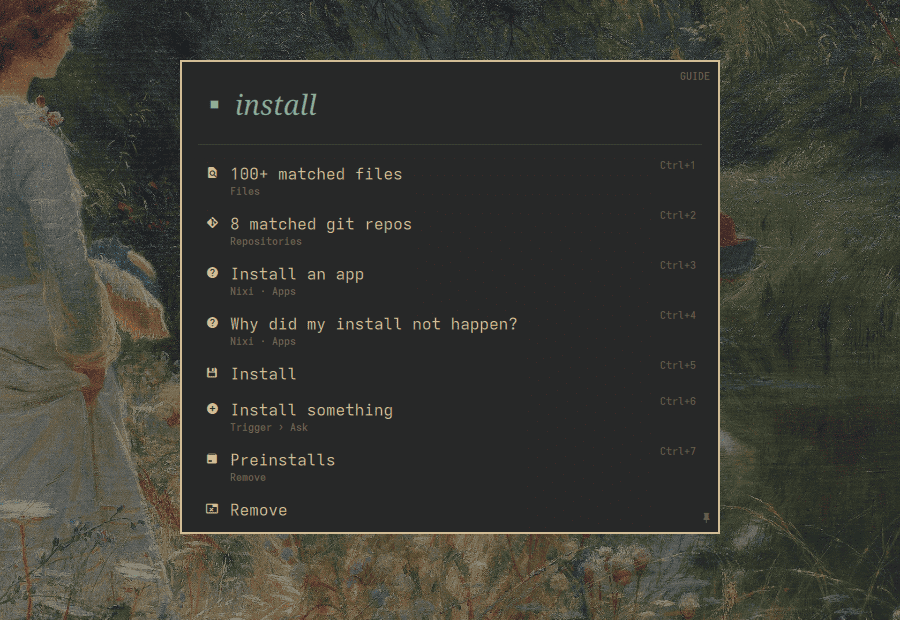
Typing searches before it asks
Sam clicks the ✨ in the bar and types install. Before any AI is involved, the
card matches Omarchy menu entries, apps, files and git repositories. Pressing Enter sends the
text to the agent as a question instead.
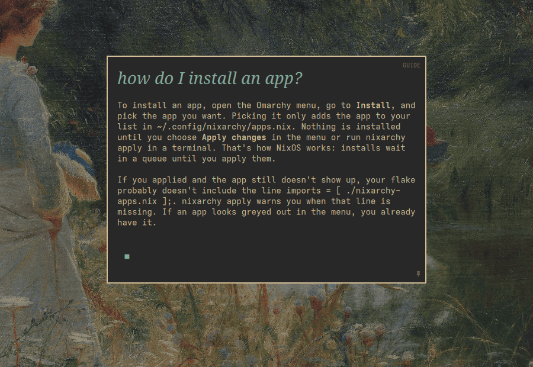
The answer is nixarchy's, not Arch's
"How do I install an app?" Sam's Arch habit says pacman -S. Nixi points to
nixarchy's own tool for the job: the Packages panel (Install ▸ Packages), where
picking an app only queues it until you apply. The terminal version comes second:
nixarchy pkg add, then nixarchy apply.
It checked first: the panel is on, and its key isn't bound on this laptop, so it says so instead of naming one. Before every question Nixi also searches a local, hash-verified copy of the nixarchy and Omarchy manuals.
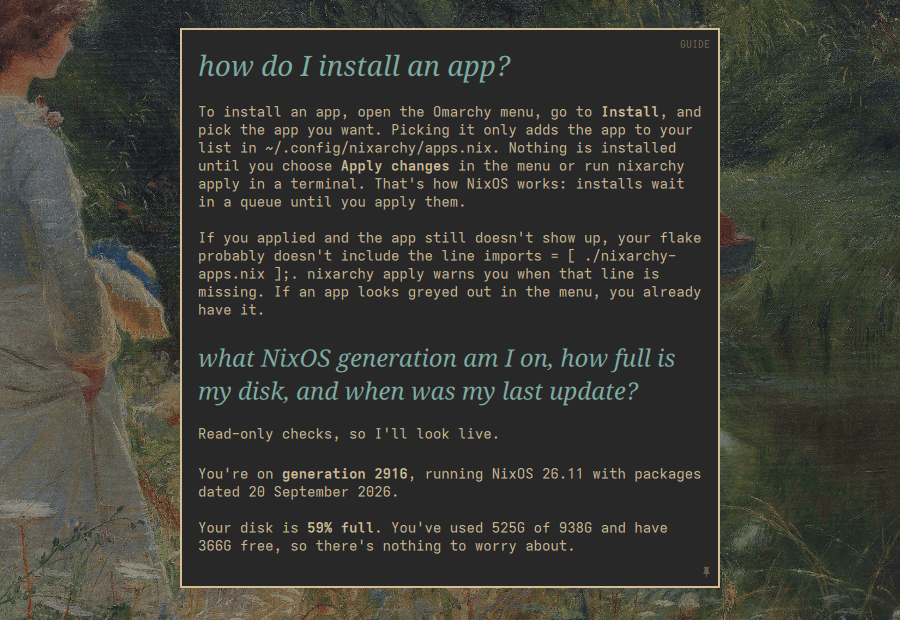
It looks, rather than guessing
"What NixOS generation am I on, how full is my disk, when did I last update?" Nixi runs
read-only checks and answers with this laptop's numbers: generation 2916, 59% of 938 GB,
updated today at 14:22. Each one matched readlink /nix/var/nix/profiles/system
and df when we checked.
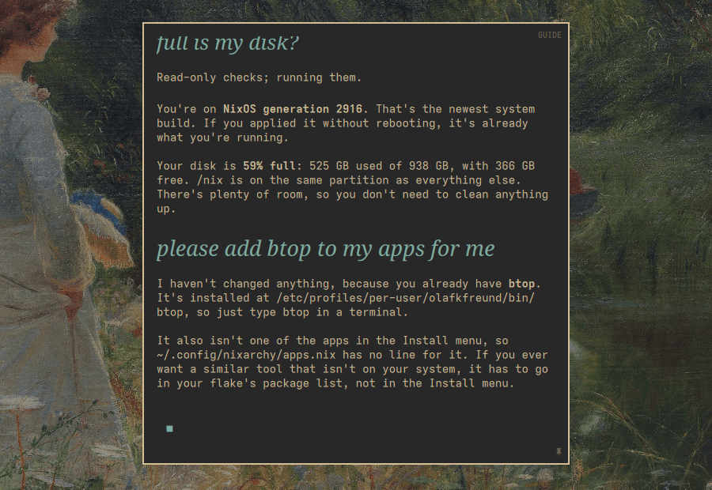
Guide explains, and changes nothing
"Please add btop to my apps for me." Nixi starts in Guide, and in Guide the bridge cancels every permission request before it reaches Sam. So it explains instead: btop is already installed, and this is where it would go if it weren't.
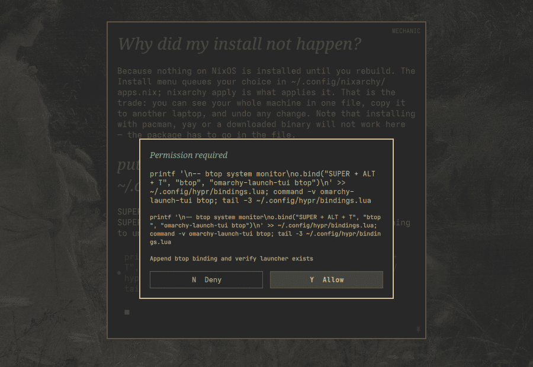
Mechanic does it, but asks first
Sam types /mechanic, then "put btop on SUPER+ALT+T for me". Nixi checks that
the key is free, finds where this machine keeps its own bindings, backs the file up, and asks
before each step, showing the whole command, here the exact line it will append. Sam answers
with Y or N, or the buttons, and can deny any step.
Most lookups no longer ask: reading files does not, except for secrets such as
~/.ssh. An occasional search still arrives as a shell command and asks.
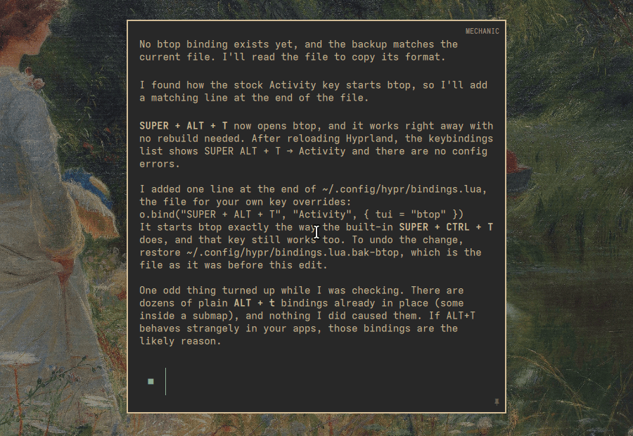
It proves the change took
One line is added to ~/.config/hypr/bindings.lua. Nixi reloads Hyprland,
confirms the live keybinding list shows SUPER+ALT+T, and tells Sam where the backup is.
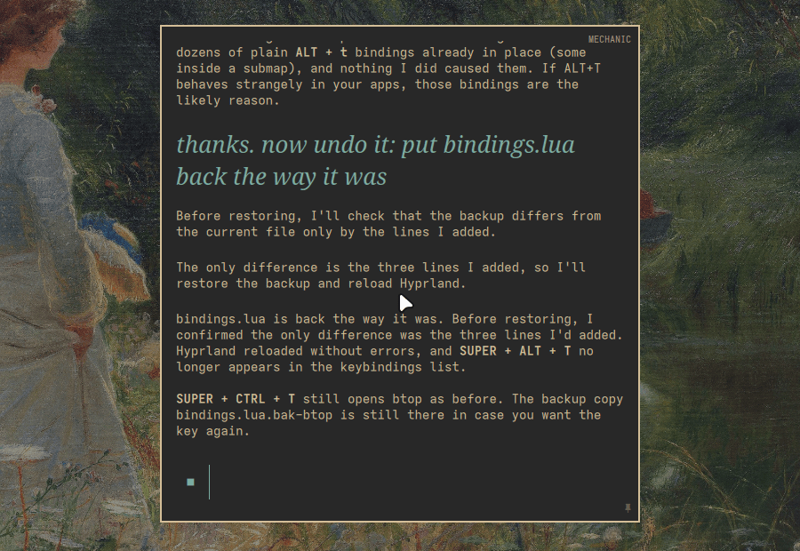
Changed your mind? Say so
"Now undo it." Nixi first checks that the backup differs only by the lines it added, then
restores it and checks the binding is gone. The file is byte-for-byte what it was.
/guide puts Nixi back into read-only mode.
No AI needed
The FAQ, the tour, the learning path and the calculator run without an agent and without the network.
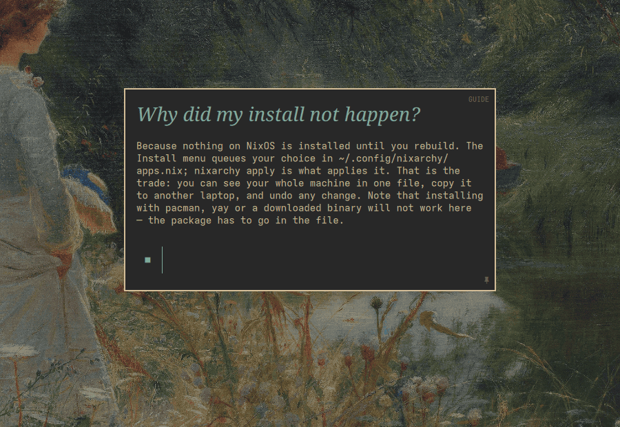
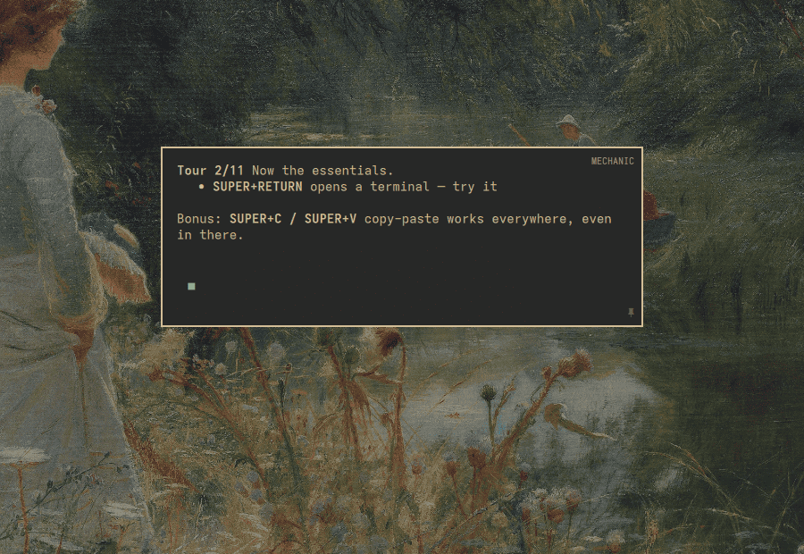
/tour: eleven steps that watch Hyprland, so a step completes when you actually do it.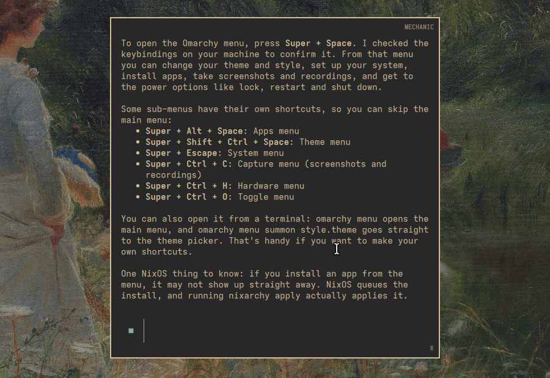
/learn: the next of 16 topics you have not covered yet.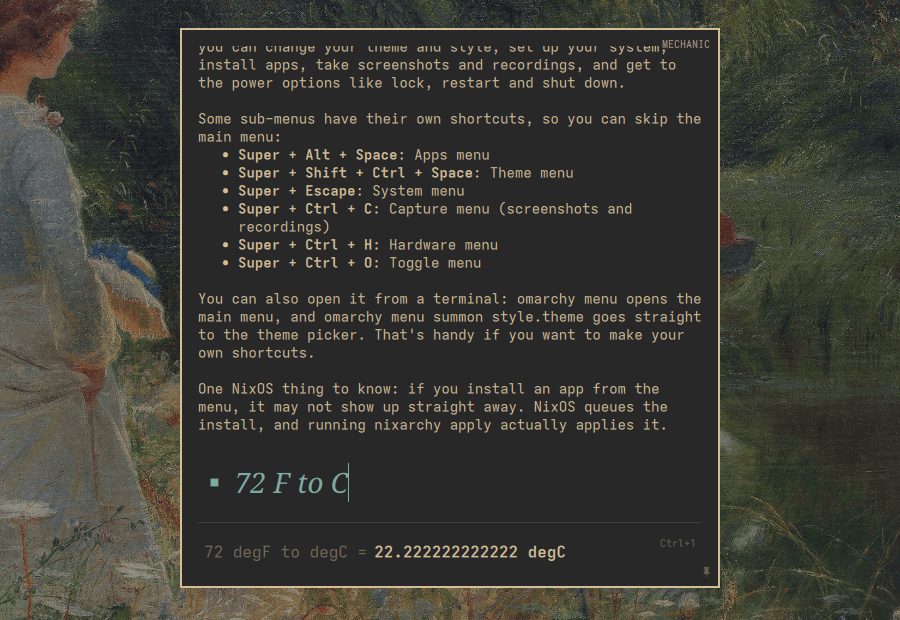
Guide and Mechanic
| Guide (default) | Mechanic | |
|---|---|---|
| What it does | Explains and instructs. Nothing on your machine changes. | Makes the change, and every step needs your yes. |
| How it's enforced | The bridge cancels every permission request, and the agent runs in its most restrictive mode. | Requests are shown in the card. With Claude, reading and searching files does not ask, except for secrets; set "askBeforeReading": true in ~/.config/omarchy/nixi.json to be asked for those too. YOLO (auto-approve) can be reached only from Mechanic. |
| Claude | plan mode, requests cancelled | default mode, asks |
| Codex | read-only, requests cancelled | read-only, asks before each edit |
| OpenCode | plan, requests cancelled | build, asks |